Review: Inov-8 Race Elite 24 NEW SS15
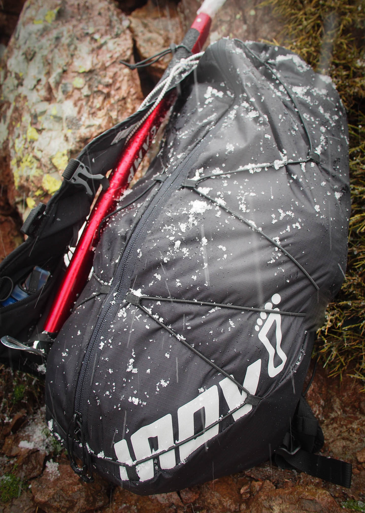
Most of us are pretty happy with a 10-12l bag for full-day adventures. It has become pretty much the most popular size, you can see it in almost all ultra races and accross all brands. However for multi-day events or for light mountainering, it's often necessary to make the jump to 20l+ size - either because you need the space or because you need a bit more comfort without having everything super-tightly packed and making things difficult to take in and out.
There comes the Inov-8 Race Elite 24L running pack, which is just new for this season. It was the perfect timing, as I decided to take on the mythical GR20 - 180km and +13000m - accross Corsica in late April. There is still a lot of snow at that time of the year, and snow can be as hard as a mirror after having frozen overnight. You thus need more equipment than for a standard Summer ultra.
Here is what is needed for this type of winter route:
- standard ultra (eg. UTMB) equipment, with base / warm / waterpoof layers etc.
- an ice axe; I chose the Camp Corsa Nanotech
- strong 3-section poles with snow gaskets
- running-shoes compatible crampons; Camp Ice Master
- a puffy; went with the Arc'teryx Cerium LT Hoody
- some volume for "normal food", I need a bit more space as I have absolutly no intention to feed on gels or energy bars and skip the delicious corse "charcuterie" :-)
What do you get exactly ?
You have two versions on the market of the Inov-8 24l running pack: 2011 and 2015. They have the same name, and - at time of writting - a google search will actually point you to the wrong version of the bag on inov-8 website:
- First result in google search: Race Elite 24l 2011
- Latest version: Race Elite 24l 2015
So what you want is the 2015 version, altough the 2011 is still a very good bag and can be had at a good price these days.
Depending of where you buy the bag, it might be labelled as coming with a 500ml bottle. If you want an extra one (which I strongly recommend for the type of expedition that you will use the bag for), the accessory is called a soft flask. So make sure not to be confused.
You might see some pictures on the web where the flasks come with drinking tubes. I did not get them either in the stock one, nor with the extra I bought. They come with the new Race Ultra vest, but not the Race Elite bag (altough both vests share the same front design).
I hope I helped clear some confusions about the versions of the bag and its accessories.
The feature list described in the official documentation is as follows:
- Large weather resistant zipped pocket to rear
- ‘ON-THE-FLY’ bungee compression
- One 500ml Softflask
- Two large zipped mesh pockets to front; double as bottle holders
- Two large mesh pockets to front top
- Two smaller stretch mesh pockets to front top
- Whistle
- Two compression straps each side and two front straps
A few extra features are present, but not clearly documented on-line:
- The zipped pocket to rear has two zip closers, you can thus decide to close the bag at the top or the bottom (and anything in the middle)
- the bag is bladder-compatible: there is a velcro hook at the top, and an opening in the rear for the tube
- there is a small zip pocket inside the bag for essentials (eg. pocket money)
- the front straps are mounted on elastic bands, thus allowing you to breath such as a good running vest should
- the build is slightly water-resistant (probably a 500cm ripstop); it is not a dry bag but will resist better to most alternatives which are mesh-based
- the bottom pockets have elastic bands inside to hold the bottles
- the small top-left pocket has an elastic band to attach the keys
- two attachments top and bottom (on the left side) for a ice axe or 2-section poles.
They'll probably be all happy surprises to discover when people get the bag, it's is a bit more featured than it might look !
Also interesting about the bag's features is this educationnal video shared by Matt Brown - Product Manager at Inov-8:
Attaching an ice axe
It's really a great feature of the bag to be ice-axe compatible !
The Camp ice axe is probably the shortest out there (50cm), but still it can be hooked securely up and bottom:
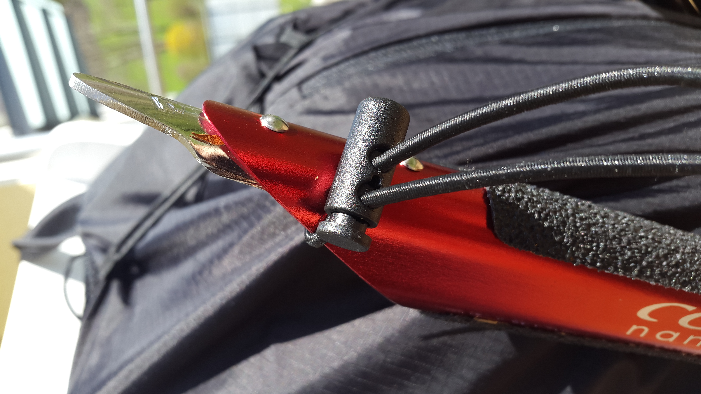
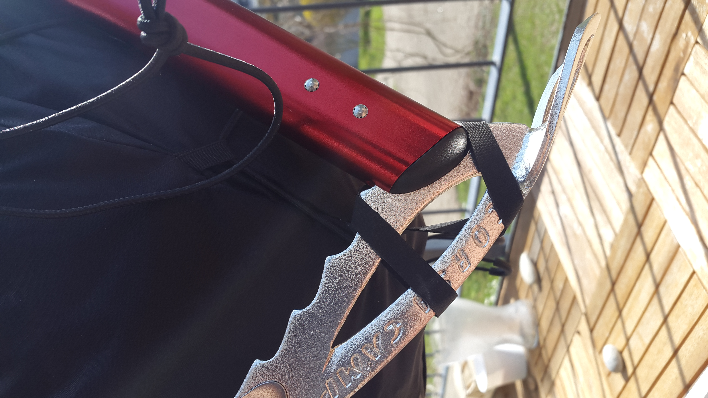
There's no problem that any ice axe you have will fit there.
Attaching poles
2-section poles can be put in the ice axe attachements (see above), and 3-section poles inside the bungee cord:
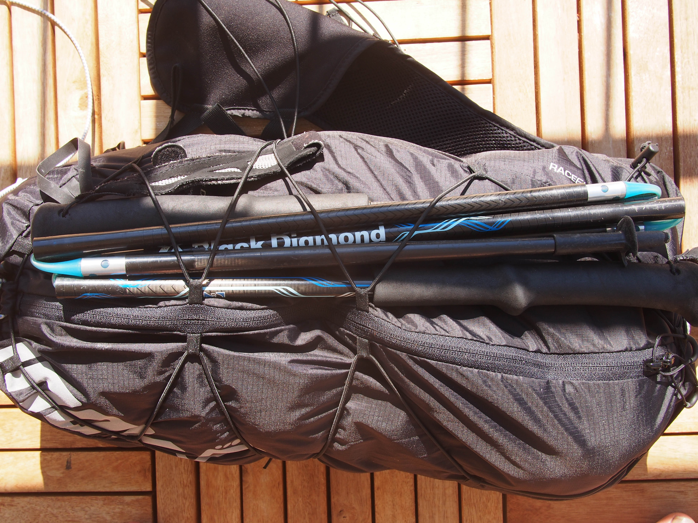
That works great if you run with a buddy, she can help you attach the poles in your back without having to remove the bag.
If you want to be independant and store the poles without removing the bag, truth is not many bags will be able to handle 3-section poles without customization. Here is the little setup I did for this bag:
- Top - make a straight loop with an elastic cord:
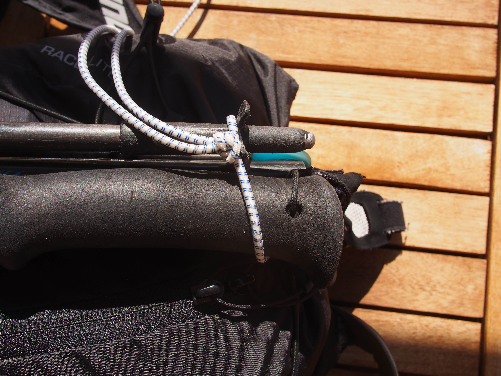
As it is the one supporting the weight, it has to be quite strong.
- Bottom - use a cord lock that will be adjusted once at the beginning of the run, its length will depend on
how much load you have in the bag:
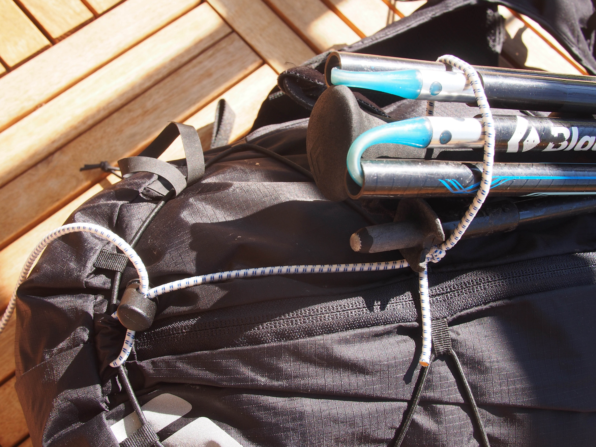
Using the front pockets
Both sides of the front of the vest are symmetrical, with the following arrangement:- a large, zipped pocket at the bottom
- a small pocket in the middle, perfect as a little garbage pocket for finished gels
- a mid-size pocket on top, running underneath the small middle pocket
In addition, the left middle pocket as an extra drawstring for keys. Here is how things look with gels and keys:

The famuous pilot and explorer Antoine de Saint Exupery reported how - after his plane crashed in the Andes cordilleras - under exhaustation he lost vital pieces of equipment like his gloves. Your brain can just not focus enough running ultras ! Having a dedicated pocket in front with a drawstring is for keys a great safety I think and gives peace of mind.
After the gels and keys come the phone. Here I put the Samsung Alpha, not the biggest one and thanksfully I was able to store it in the upper front pocket:
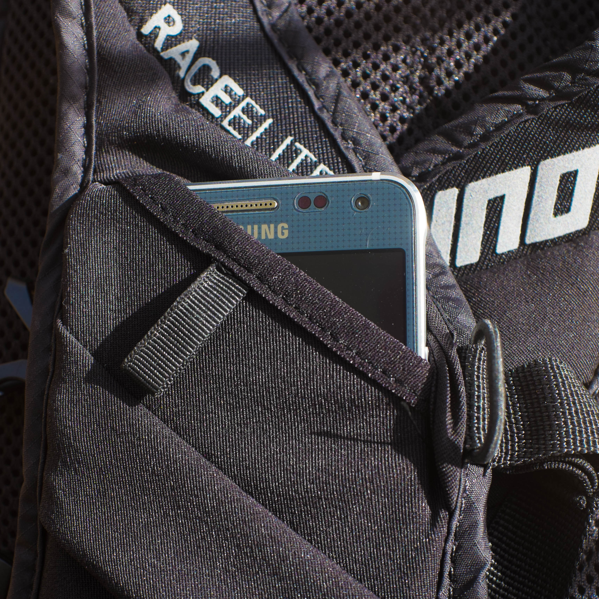
I feel it is necessary to have the phone as easily accessible as possible from a safety standpoint, and Inov-8 Race Elite is my only bag giving the option to get the phone without removing the bag in tricky conditions (would I fall in a hole or have only one hand available to pick it up for instance). The iPhone 6 has a couple more mm in width and lenght, but it might be able to fit as well. The pocket is very tight though, if you use the phone often to check maps and such you'l probably want to store it somewhere else.
Last but not least, come the drinking bottles. They can be secured with the additionnal band:
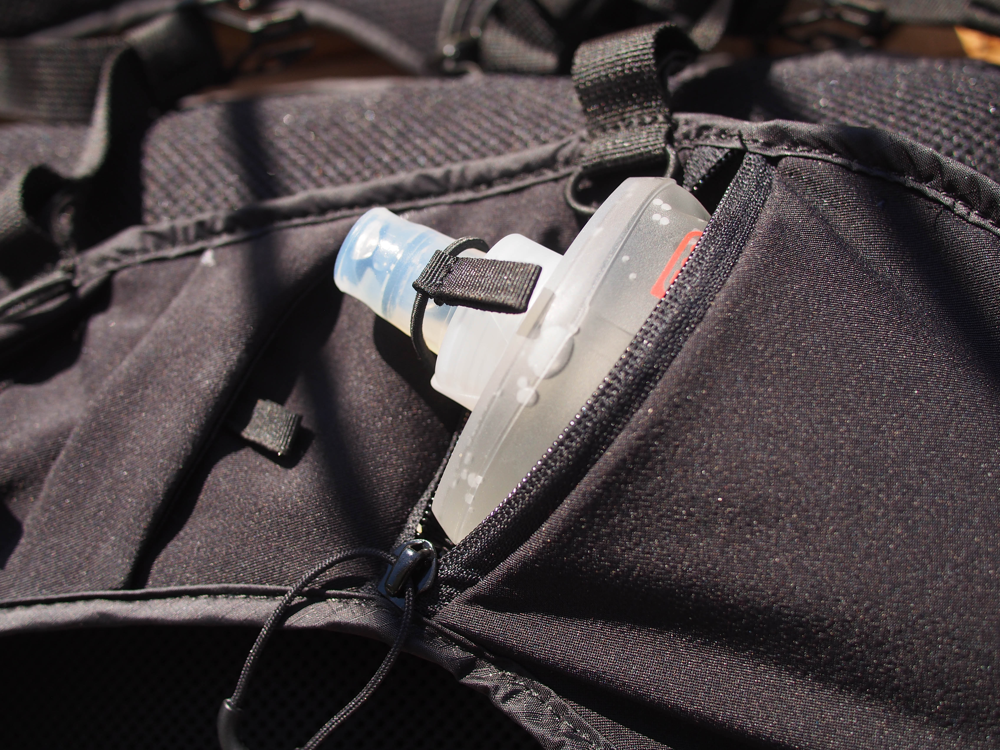
Beside the bottle provided with the bag, the other "slim" model - also made by HydraPack - fits well:
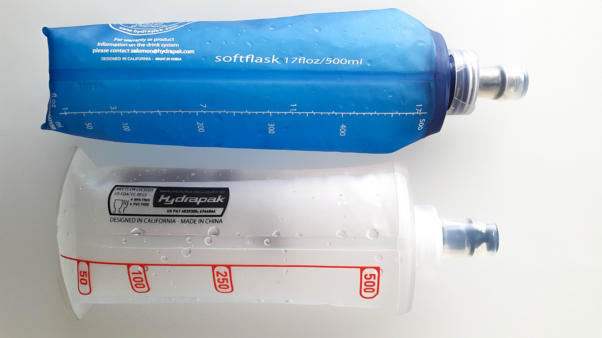
I actually preferred it since it left a bit more space in the pocket for other items. Since it reaches higher-up, drinking on the go was slightly easier (more on that topic below).
Using the main compartment
The full light-mountainering equipement fits really easily, total of 3.5kg without food and water:

The inside of the bag is black, so it can make finding items a bit difficult - especially with the current fashion among ultra-runners (as opposed to road runners) to wear a lot of black. Wish the inside was white or some other clear color.
There is really only one big compartement, with no further separation inside (except for a wallet zip pocket). It might be perceived as a limitation, but it is actually a great feature: you can organize things the way you want !
In particular, I recommend to get a set of utra-light pockets. I use a XS one for small items (USB charger and cable, nail clipper, compeed box, etc.):
For food, I use a S one:
That adds a bit to the price of the bag, but additionnal pockets give you more versatility and quality than built-in ones. For instance if you take another bag, you can transfer the entire "small equipment" pocket and not worry about forgetting items as you switch bag. Furthermore, even if the bag had built-in pockets your would probably buy a waterpoof pocket anyway - so you loose really nothing here.
On the run
For the test run, I picked a 55k / +2300m route in a hilly landscape - hovering around 1000m.
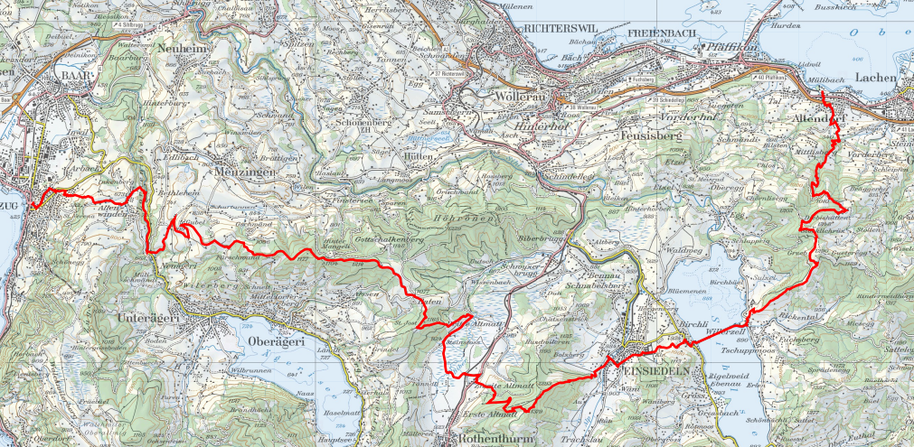
And off we go :-)
The bag is pretty narrow and fits well the middle of the back, thus giving a very good balance. Since the bag is long, load spreads evenly in a relatively thin layer and keeps things close to the body. While in this case the load could have fit in a smaller 17L bag, I felt the 24L provided much better weight distribution.
Another advantage of keeping the load close to your body is that it is easier - provided you chose it one size above your usual fit - to pull a rain or wind jacket over the backpack: in quick changing weather conditions, you can go "poncho-style" and put the jacket on and off without having to remove the backpack. With the 24l fully loaded you will not be able to fully close the zipper, but still thanks to the slim design things will always be better than a back of smaller capacity often creating a "bubble" on the top of your bag.
In between the showers, I just remove the jacket and tighten it around my waist so it can dry without making the rest of the bag wet.
Along the same lines, the bungee cords on the back or the straps on the side are very useful to store wet items outside until they dry out. For instance, after a couple hours my overpants were full of snow :
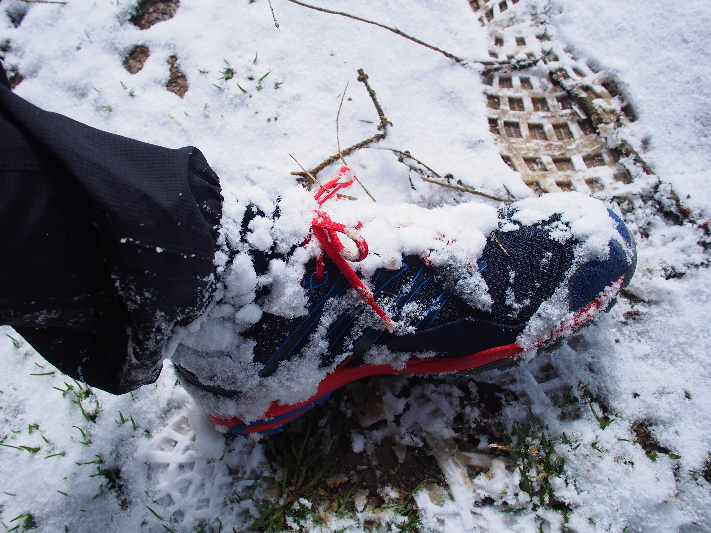
As I was going downhill, temperature raised and when came time to remove the pants I could store them securly with the bungee cord outside the back to let them dry.
Thanks to the vest design, absolutly no problem to rush down technical single trails. That was my first complain with other bags, including the well-regarded WAA Ultra 20l. Altough they are fine at moderate speed (eg. 6min /k) on gentle terrain, you are quickly faced with a dilemna: keep them loose and they wobble, or tighten up the waist belt but you cannot breath anymore. No such thing with the Inov-8 Elite vest, everything stays very stable and comfortable at the same time.
The bag fits so well, I did not need to adjust any strap during the run - you can keep all the same settings for uphill or downhill for instance. The position of the front straps also is fixed, no problem with them slidding down on a guide as design of adjustable straps often use.
I got to appreciate a lot the duffle bag design, really genius un my mind. It makes everything easily accessible, while things do not fall on the floor when the zipper is fully opened. The alternatives are usually the following:
- top opening: if you want something at the bottom of the bag, good luck with that
- zipped-around: those bags usually lack any structure; it means that as you fully open the zipper, the sides do not provide any support andthings will fall-off unless the bag is on a perfectly flat surface.
If the floor is really muddy or you are doing some scrambling, you can remove one shoulder strap, rotate the bag on the side and open it while standing up.
Now comes something people might be concerned about: without a belt, you cannot spread the load - everything is on the shoulders. I had a doubt too, given also that the straps are not as wide as other models designed for a much smaller capacity. See the comparaison with the Salomon S-Lab 12; inner lines are drawn from the Inov-8, the outer ones from the Salomon:
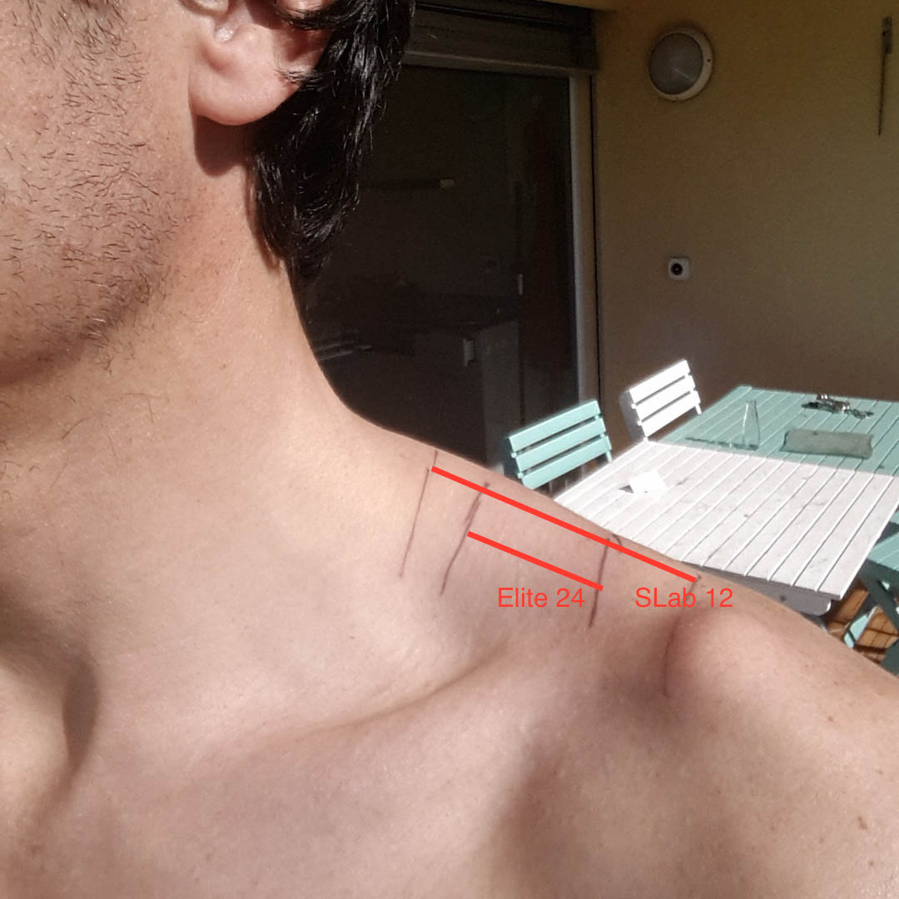
You can see they are about half the size, and given the extra load you would use for a larger bag it means about 3-4 times more pressure (load per surface area). While it is possible the bag could be a little more comfortable with wider straps, after carrying 6kg during 9 hours I felt absolutly no soreness on the neck or the shoulders, wether wearing 3 layers in cold conditions or a simple singlet in warmer weather.
However, starting 5-6kg you start to feel the limit of the vest design: under its weight, the bag will turn a littlet around your body as you lean a bit too much on one side or the other. Adding a little belt strap could help, you can put it on the side straps.
The bottles fit good close to the body, under the ribs - even full, they move very little compared to higher options (eg. chest level). Unfortunatly, it means that drinking on the go while keeping the flask in the pocket is not very comfortable. To make it worse, if you pull the bottle out it is realy important to secure it again with the elastic band - I know it since I lost a bottle on my very first run :-)
A few options would be on the table to improve the hydration:
- Reuse the Inov-8 soft flasks with tube, as provided with Inov-8 Race Ultra range; unfortunalty, it does not seem possible to buy them independantly (however I have been told it might be possible next year)
- Take 3rd party flasks with tube, such as Ultraspire or Raidlight
- If you keep the stock bottles, unbunckle the chest straps before you drink, it helps move the bottles up a little
Refilling the flasks at the springs found along the way was easy, much easier than a back bladder - and they help balance the weight in front. For these two reasons, I would absolutely not go back to bladders anymore - and I don't think any pro still for racing nowadays.
Ease of nutrition on the go really depends on what you like to feed on. The bag has smaller front pockets on top, as pictured above they can hold pretty nicely a couple of gels or energy bars.
However I like to keep gels food for really the end of the day, when absorbing food can become difficult. I try to use "normal food" as much as possible the rest of the time - for instance nuts & dry fruits or dried meat & cheese:
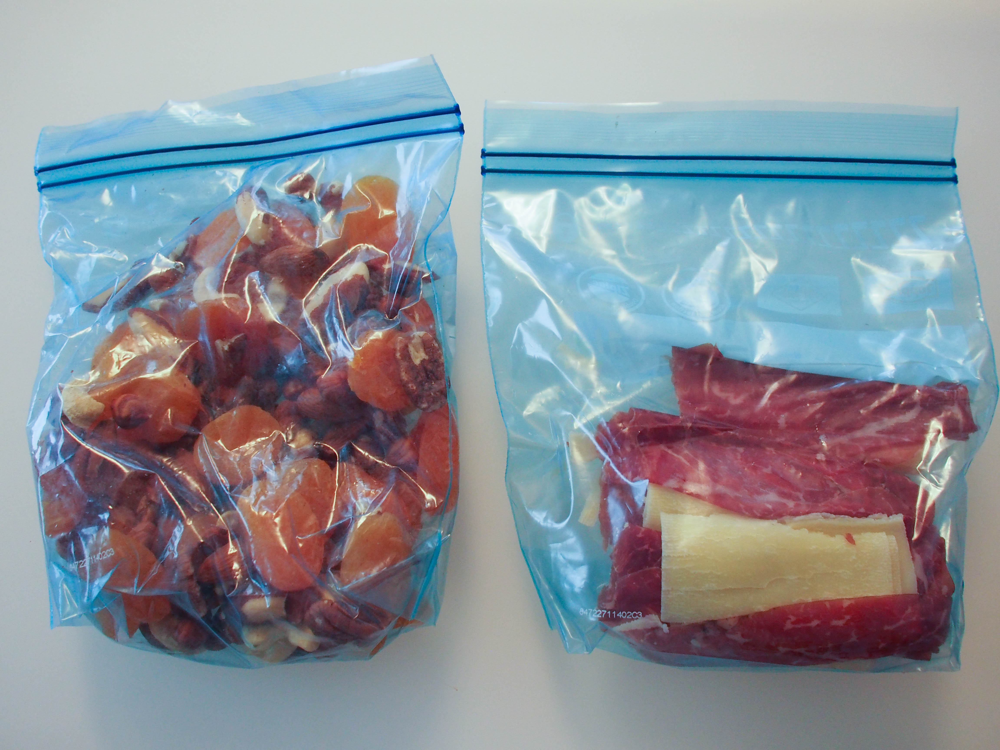
I would usually put it in a dump mesh pocket on the side so it is easily accessible while on the run but, at the opposite of the Race Ultra, the Race Elite do not have these. Inov-8 has an accessory front mesh pocket on catalog, but it is not compatible with the Elite. It would be really great to have some accessory mesh side pocket, the presence of adjustable side traps could open the door to such option. I can see them very useful to store food as described above, but also quick changing equipement such as a camera, arm warmers, hat, gloves or map. Beside accessibility, it would help also to transfer some of the weight onto the waist.
To store food you might be tempted to free-up one of the large, bottom pockets by keeping only one bottle in front and store the second in the back - then switch them when empty. Unfortunatly these Hydrapack bottles are definitively not made to withstand much pressure and will leak quickly if stored in a packed bag. Even if kept in the front-pocket, they may leak a little (with variability from instance to instance, even if they are from the same model).
With all that said, if you are happy with gels and bars - then you would have no issue with nutrition on this bag. Personally, I often use 3/4 climbing pants for my winter running and they have the advantage to have large pockets into which I can store food. Plus, when you come to cross a village you look less silly than with these super-tight running pants ;)
Conclusion
- A very comfortable bag, even if you don't need the full 24L you will appreciate it for content of 15L and more
- The duffle bag design is the best choice I have ever seen: bag can be wide-opened, while limiting risk of things falling even in the most tricky conditions
- A quite unique item, with very little competition given its capacity and weight; ice-axe compatible is a big plus
- A reasonnable price given the well-thought design and quality of craftmanship
- Sturdy design, made for real adventures; it is in-between your typical mesh-based running bag and lightweight ski touring items
A couple of things to be aware off:
- Not side dump pockets, so think it that may affect your setup (especially for mid-size items that you want readily accessible on the go).
- In my mind, the hydration system could be improved a little by either providing drinking tubes or - better - allow the flasks to sit higher up.
- For really heavy load, add a belt strap onto the side attachements
Let me share also a couple of other cool reviews that you may find interesting:
- by Ian Corless
- by Joe Grant